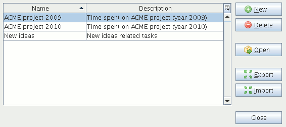

Workspaces editorWith the workspaces editor you can do maintenance on your workspaces. The workspaces editor is available from the |Tools|Workspaces| menu or from the "Open workspace" dialog.

The workspaces editor is a dialog with a table presenting every workspace as a single row. To add a new workspace click on the New button and type a name for it. A new row representing the new workspace will appear in the table. To delete a workspace, select the corresponding row, then click on the Delete button. Please note that when the current workspace is selected the Delete button is disabled; in other words you cannot delete the current workspace. To change a workspace name or description select the corresponding cell and double click on it or press the F2 function key, then type your changes. To use a workspace – hence making it the current one – click on the Open button. Use the Export button to export the selected workspace, or Import to get previously exported external data. |